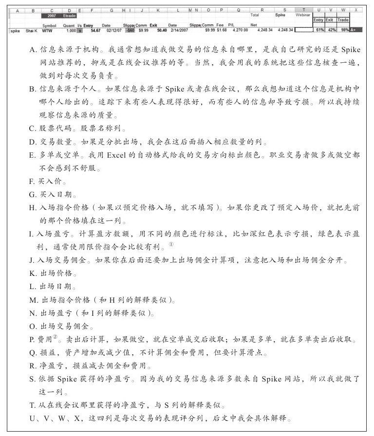

每当我和交易者交谈时，我都为他们少得可怜的交易记录感到吃惊。有些人依赖经纪人，但经纪人做不到那么细致，所以我建议你要有自己的表格。我在我的公司网站（www.elder.com）上免费提供了一个基础版的电子表格，作为向交易者提供的一项公共服务。你也可以给我们发电子邮件索取模板，邮箱地址：info@elder.com，表格形式如图3-1所示。
你不需要成为表格专家，但运用表格管理交易数据的能力会让你在交易中获益匪浅。新手拿出看盘的1/10时间学习基本的表格知识，水平很快就会有不小的提升。

每次交易后就在表格上做一次更新，这花不了多长时间。我在表格中为每个账户做了一个记录账户金额的表格，我还做了一个用于记录周账户资金汇总表格，这些表格用来追踪我的资产曲线。
图3-1是从我的电子表格中摘录出来的，里面有表头、数据以及对这些数据的解释。